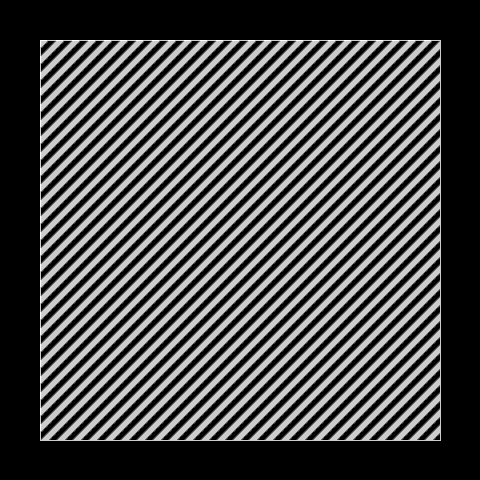

Goal
The aim of this tutorial is to explain how to obtain with Processing the following kinds of GIF generatively from the same program, using random 2D transformations. This something I’ve been exploring since November 2017.

Or with another program :


It will first explain how to obtain those kinds of generative GIFs :


Preliminaries : static images from random 2D transformations
The algorithms presented in this tutorial are based on the work of Tomasz Sulej (http://generateme.tumblr.com, http://folds2d.tumblr.com).
Here is a tutorial that presents some 2D transformations and explains how to render them nicely with Processing :
https://generateme.wordpress.com/2016/04/11/folds/
It is important to understand the key ideas of this tutorial to understand mine, so I will sum them up. The idea is to draw the image of little dots of low opacity after applying a 2D transformation. The dots are initially in [-3.0,3.0]x[-3.0,3.0]. What is done to render the transformation can be seen as “folding a square”. The dots will concentrate at some places resulting in higher drawing opacity at those places. 2D transformation can also be called folds.
Also the code he uploaded on OpenProcessing here is fundamental. It uses the composition of several types of functions randomly (there are 21 types in this version), and each type of function can have random parameters, so the number of possibilities of drawings that can be generated explodes. You can click to skip the current drawing and draw a different one.
I advise to visit http://folds2d.tumblr.com to see what can be drawn from 2D transformations.
Now let’s see how to make gifs from there.
First approach : morphing with linear interpolation between folds
I can hardly explain it better than what’s in the title. The idea is to do linear interpolation between 3 transformation (only between 2 transformations at a time). Why 3? to get a nice cycle 1 -> 2 -> 3 -> 1 and not just 1 -> 2 -> 1 that would give a less interesting motion.
Here is what can be obtained using some transformation from the folds2d tutorial, with its rendering technique.
(Lost the code for this version and too lazy to write it back, but it’s pretty straight forward)
Update : oh I actually found it back ! Here it is.
Also what can be done is to show the motion more slowly using many representations in a circle. It can look like this :


I still have the code for that one : circularfoldsmorphing.pde
Some comments about this program :
I don’t advise you to understand all of this horrible code, but I can tell you how to use it : click to start generating again with other parameters and transformations. Most of the time it uses transformations that use randomness, and it doesn’t look nice.
It uses two random 2D transformations (obtained by random composition of functions from more than 170 types) and the identity transformation (no transformation). Also here it doesn’t fold a square but some points on 100 lines that start from the center of a circle. An easing function is used for smoother motion.
Second approach : using 2D transformations on moving lines
A second approach to make an animated gif from a 2D transformation is to apply it to moving lines.
Here is what we will draw with no transformation (still drawn with little dots of low opacity).
The motivation behind such lines is that we want a perfectly looping motion.
With a random 2D transformation obtained by composing many types of functions randomly, it’s possible to obtain the following results from the same program :

Here is the code : foldingmovinglines2.pde
Comments about how to use this program :
The lines are being drawn one by one for each frame. So you can see structures being drawn one by one, and the animation is so that each structure will replace the next structure that will be drawn. That’s why you can know if the motion will be interesting or not, and if you have to click in order to generate another gif. Typically if structures are drawn on top of each other the motion will be uninteresting. Note that most often the results don’t look as nice as what I show here. The 2D transformations that are obtained by this algorithm are often not continuous and that can cause some structures to disappear brutally.
Another idea is to apply the 2D transformation to those lines (it uses a fade in opacity) :

Code : foldingmovinglines.pde
Some results :


A more recent idea is to apply the 2D transformation to this :
(still drawn with little dots of low opacity)
Code : foldingmovingparts.pde
Some results :
More results here.
Third approach : using a moving 2D transformation in between other generative 2D transformations
I won’t explain this one much more than the title. Basically it uses a 2D transformation based on noise (that loops well), in between two 2D transformations obtained like previously. That technique gives a final 2D transformation that changes through time and that loops well. I obtained those results from the same program :


Conclusion
The second approach (but also the third one) to make gifs from 2D transformations shows that they can give some complex generative motion. An algorithm that obtains random 2D transformations by random composition of several types of functions can therefore lead to a great variety of shapes and motion. By increasing the resolution, reducing the opacity of the dots and using more of them, it’s probably possible to obtain some better looking results than what I present here at the price of more computation time.
Keyword of this tutorial : 2D transformation üôÇ
Big thanks to Tomasz Sulej, I would have done nothing of this without him.